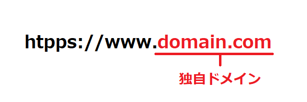

【解説】独自ドメインとは？わかりやすく具体的に紹介

独自ドメインを一言で説明すると世界で1つだけのホームページURLでもあり、自分たちだけの
専用メールアドレスのアドレス名になるものでもあります。
独自ドメインを持つには「お名前ドメイン」や「エックスドメイン」などのドメイン会社で
「domain.comのドメインを登録します」と申し込みをするだけでOK。
ドメイン登録をすれば、1年間そのドメインを使う権利がもらえます。
登録したドメインは「ホームページ」や「メールアドレス」のオリジナルURLになる
より具体的に説明してみましょう。
当サイトの場合だと、登録している独自ドメインは以下になります。
domain-server-study.com
実際にホームページやワードプレスを作ると、次のようなホームページURLで作ることが出来ます。
このURLは、ドメインを持っている当サイトだけのオリジナルURLになります。
https://www.domain-server-study.com
次にメールアドレスも作ってみましょう。メールアドレスもホームページURLと同様に、ドメイン名がメールアドレスに含まれます。
結果、次のようなメールアドレスを作ることが出来ます。
info@domain-server-study.com（メインアドレス）
a.sato@domain-server-study.com（佐藤さん用アドレス）
独自ドメインを持つことで、このようにドメインが入ったホームページ、メールアドレスが作れます。
これこそが独自ドメインを持つ最大のメリットであり、特徴になります。
※ちなみに、ワードプレスやメールアドレスは、独自ドメインに加えてレンタルサーバーを借りることで作れるようになります。
今のレンタルサーバーには「簡易セットアップ機能」があるので30分もあればワードプレスが作れるでしょう。
独自ドメインを登録する時は、まずドメイン名を考える
この独自ドメイン。自分で好きなキーワードを考えて取得することができます。
ただし前提条件として同じドメイン名では重複登録できないという条件があります。
そのため、他の方が既に持っているドメイン名では登録できません。
そのため、もし「domain.jp」が欲しいと思ったら、まずは各ドメイン会社のホームぺージへ行ってドメイン検索と呼ばれる検索を行い、
空いているドメインかどうかを調べなくてはいけません。
そして、自分が欲しいドメインである「domain.jp」をこれまでに誰も登録していなければ、そのまま登録ができます。
単一キーワードや人気のキーワードが入ったドメインだと、すでに登録されているケースが大半なのでキーワードを長くしたり、
ドメインの種類を変えたりして探していくことになります。
- 「domain.jp」:? 既に登録されている
- 「domain-get.jp」：? キーワードを長くするが登録されている
- 「domain.shop」：? ドメインの種類を「.shop」に変えるが登録されている
- 「domain-sutdy.jp」:〇 キーワードを更に変えることで登録できた
独自ドメインは、そのままホームページURLやメールアドレスになるので、とても重要であることは間違いありません。
今後5年～10年と併用していくものになる可能性もありますから、じっくり時間をかけてドメイン名を考えましょう。
どんなドメイン名が良いのか？というのは時事的に流行もありますが、現時点では次のページにまとめている情報が
比較的参考になると思います。ドメイン名の決め方に悩んでいる方はぜひ読んでみてください。
【関連記事】良いドメイン名の決め方。5つのアイディアで最適な独自ドメインを考える
ドメインには500種類以上種類があります
独自ドメインを決める際に、もう１つ知っておいて欲しいのが「ドメインの種類」への理解になります。
580種類以上のドメインの種類があり、それぞれが特徴を持っています。
そして種類とは別に大きく2つに分類分けされています。「分野別ドメイン」と「国別ドメイン」という分け方になります。これについて
解説していきます。
分野別ドメイン（.net、.incなど）
分野別ドメインとは「.com」「.net」「.inc」「.shop」「.media」など、それぞれが特定の分野を表しているドメインになります。
この分野別ドメインは実に500以上の種類があります。
実質、「.com」が80%近いシェアを持っていて大変な登録数になっています。CANNの発表では1億6,000万もの数が登録されています。
次に登録数が多い「.net」でも登録数が1,400万ほどなので、10倍近い差があります。
国別ドメイン（.jp、.co.jpなど）
国別ドメインは世界の国ごとに割り当てられたドメインになります。日本の場合「.jp」がつくドメインが国別ドメインになります。
日本の場合、法人しか取れない「.co.jp」や誰でも登録できる「.jp」など、10種類近い国別ドメインがあります。
JPRSのデータでは「.jp」は105万件、「.co.jp」は45万件の数が登録されています（2021年11月時点データ）。
独自ドメインの登録は「ドメイン名」と「ドメインの種類」をどうするか。そのバランスが難しい
ドメイン名を決める時に「どのドメインの種類で登録するか」というのは、たいへん悩ましい所だと思います。
分野別ドメインは500種類あると説明をしましたが、その大半のドメインは2012年以降に登場したあたらしいドメインになっています。
ドメインの登録数がわずかなので、あらゆるキーワードが空いています。
しかしながら、「.com」や「.jp」の方が皆が知っているドメインなので安心。という理由から
あたらしい分野別ドメインは、そこまで登録数が増えていないのが現状になります。
ほとんどのキーワードで登録されているが知られている「.com」「.jp」を選ぶのか。
キーワードが空いているけれども、あまり知られていない分野別ドメインを選ぶのか。
ドメインの料金は？
独自ドメインの料金ですが「.jp」や「.co.jp」など人気ドメインのおおよその料金は年間で1,000円～5,000円ほどになります。
「.com」だと1,200円～1,500円
「.jp」だと3,000円
「.co.jp」だと4,000円
あくまでも概算値ではありますが、このあたりが各ドメインの平均的な価格帯になるでしょう。
そして、これは月額料金ではなく1年間分の料金になります。
料金を払って、1年間分の独自ドメインの権利をもらっていると考えてください。
その他の分野別ドメインの料金は様々
また、分野別ドメインはそれぞれ価格が違います。比較的登録数が多い「.net」「.info」などのドメイン料金は低価格になっていますが、
「.inc」のように5,000円以上もするドメインもあるので、分野別ドメインを登録する際はよく料金を確認してから登録しましょう。
独自ドメインは無料でもらえることが多い
また最近では、レンタルサーバーを契約することで独自ドメインが無料でもらえるキャンペーンが数多く実施されています。
エックスサーバーであればエックスドメインが無料でもらえ、お名前レンタルサーバーであればお名前ドメインの独自ドメインがもらえます。
そのため、レンタルサーバー経由で独自ドメインを持つ方も多くなっています。
独自ドメインを登録したら
支払い期間の「期限切れ」には注意しよう
ドメインの取得で注意してほしいのが「期限切れ」です。
ドメインは1年ごとの契約になっていて1年間たつと契約が切れるわけですから、もう一度料金を支払わなくてはいけません。
期限が切れる1ヶ月前から何回もメールが送られてきますので、メールを確認すれば忘れることはありませんが、
メール自体を見ていないと、そのまま未払い状態になりドメインの権利が失効することになります。（※ドメインは1年ごとの有効期限切れに注意！）
私もドメインの支払いを忘れ、期限切れ後に気がついて焦ったことが何回もあります。
1週間ぐらいだと、そのまま料金支払って大丈夫なんてケースがほとんどでしたけど、
間に合わずにドメイン失効っていうのもありました。
最近になって、未払いでも期間が1ヶ月ぐらいであれば、ドメインを戻せるようになりました。ただし有料となり費用がかかります。
クレジットカードの自動支払いなどを設定することで、
忘れないように気をつけましょう。
この記事の著者・プロフィール
Web制作を始めて約19年になります（HTML/css、Photoshop、Webマーケティング）。2005年から当サイトの運営を開始。
これまでに300個以上のドメインを取得、10社を超えるレンタルサーバーを利用してきました。